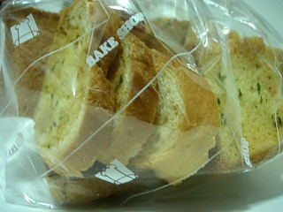
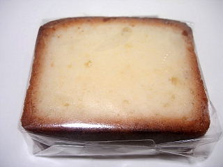

カーメルのガーリックラスク
2008/9/22
フランスパンと食パンのラスクが入ってました。

私は食パンの方が好きでした。サクサク感がクッキーっぽくて、お菓子感がとっても強くてよかったです。
味も、食パンの方がガーリック味が分かり易くて美味しかったです。
島根県松江市学園2-26-27
閉店しました。
2008/9/22
フランスパンと食パンのラスクが入ってました。

私は食パンの方が好きでした。サクサク感がクッキーっぽくて、お菓子感がとっても強くてよかったです。
味も、食パンの方がガーリック味が分かり易くて美味しかったです。
2008/9/21
ケーキの内側が白く、キメが細かくてとても綺麗に見えました。
（写真はちょっと黄色かかってしまいました。）

キメが細かくてちょっとドライなので、食べるとちょっと「パフ」っとしました。
ミルク風味がして甘く、油っこくなくて、よそのパウンドケーキとは違う独特の味で新鮮でした。これはこれでお菓子っぽくていいなって思いました。